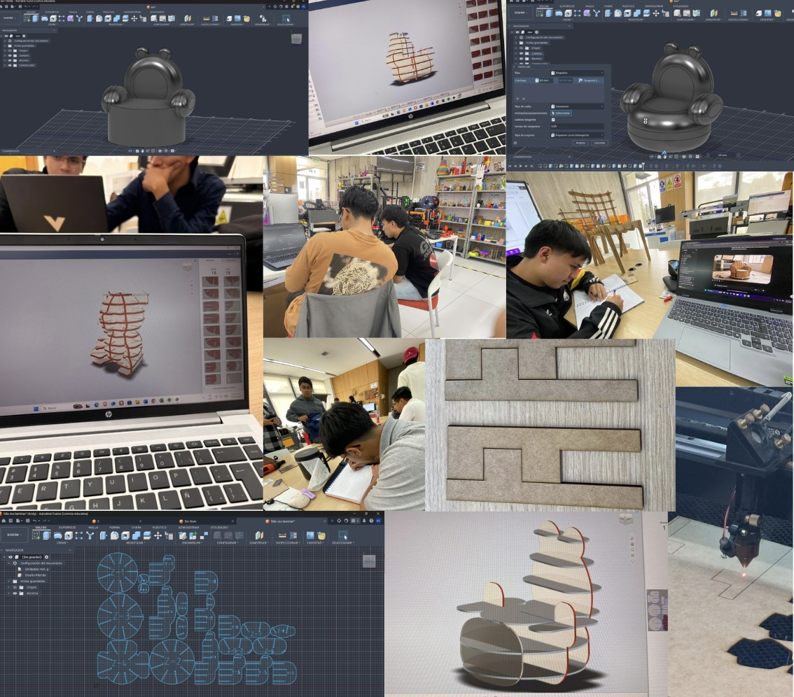

DOCUMENTACIÓN · SEMANA 04
Semana 04
Durante la cuarta semana definimos nuestro proyecto interciclo: el diseño y fabricación de una silla infantil para niños de aproximadamente 4 años, inspirada en la figura de un osito. La propuesta busca combinar una apariencia amigable con una estructura funcional, estable y fácil de ensamblar, utilizando piezas de MDF cortadas con geometrías específicas y unidas mediante encastres.
📌 Tema de la semana
Diseño de una silla infantil inspirada en un osito, mediante el uso de piezas de MDF cortadas con geometrías específicas y un sistema de ensamblaje por encastres.
Periodo: 12 al 18 de octubre de 2026.
🧸 Descripción del proyecto
Nuestro proyecto interciclo consiste en diseñar y fabricar una silla infantil dirigida a niños de aproximadamente 4 años. La figura de un osito es la inspiración principal para conseguir una apariencia reconocible, agradable y atractiva para el público infantil.
Además de su apariencia, la propuesta considera la funcionalidad de la silla, la estabilidad de su estructura y la facilidad de ensamblaje de sus componentes.
💡 Características de la propuesta
Inspiración en un osito
El diseño toma como referencia la figura de un osito para crear una silla con formas reconocibles y una apariencia amigable para los niños.
Estructura funcional
La propuesta busca obtener una estructura estable y apropiada para el uso infantil, considerando las características de sus piezas y su ensamblaje.
Encastres de MDF
Las piezas se diseñan con geometrías específicas para acoplarse entre sí y formar la estructura de la silla, sin depender exclusivamente de fijaciones adicionales.
⚙️ Material y sistema constructivo
El material principal seleccionado para la propuesta es el MDF, que se utilizará en la fabricación de las distintas piezas de la silla.
El sistema constructivo se basa en cortar las piezas con geometrías específicas y unirlas mediante encastres. Este mecanismo permite que los componentes se acoplen para formar la estructura del mueble.
La precisión de las geometrías y el ajuste entre las piezas son aspectos importantes para considerar durante el diseño y el ensamblaje del proyecto.
📝 Enfoque de trabajo
Definición de la propuesta
Establecer el concepto de la silla infantil, su inspiración en un osito y el público al que está dirigida.
Diseño de las piezas
Considerar las geometrías de las piezas de MDF y la forma en que se acoplarán mediante el sistema de encastres.
Ensamblaje de la estructura
Orientar el diseño hacia una estructura funcional, estable y fácil de ensamblar, teniendo en cuenta el ajuste entre sus componentes.
DOCUMENTACIÓN VISUAL
📷 Evidencias
Registro visual del diseño y desarrollo de nuestra silla infantil inspirada en un osito.

Evidencia del proyecto interciclo: diseño de la silla infantil y propuesta de ensamblaje mediante encastres.
🌱 Lo aprendido
Durante esta semana definimos una propuesta de diseño orientada a resolver una necesidad de mobiliario infantil, integrando aspectos funcionales y visuales.
También identificamos la importancia de planificar las geometrías de las piezas y el sistema de encastres para facilitar el ensamblaje y conseguir una estructura estable.
⚠️ Retos por considerar
Uno de los aspectos importantes del proyecto será conseguir que las piezas de MDF encajen correctamente y que la estructura final sea estable y funcional.
Para avanzar, será necesario considerar cuidadosamente las geometrías de corte, las uniones entre los componentes y las características de uso de una silla destinada a niños pequeños.